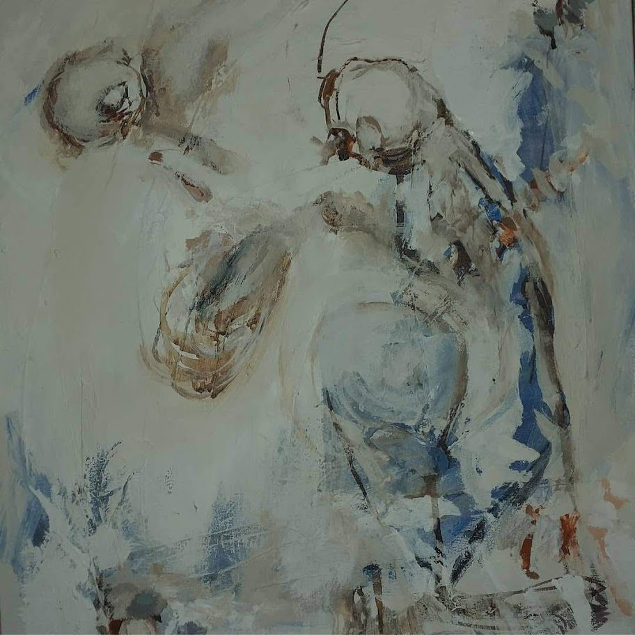
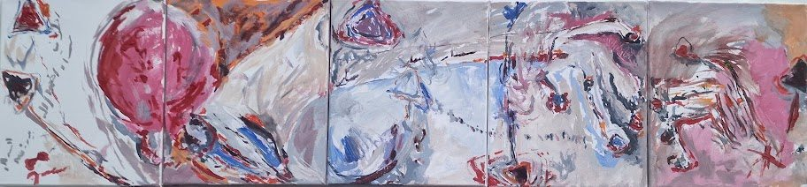
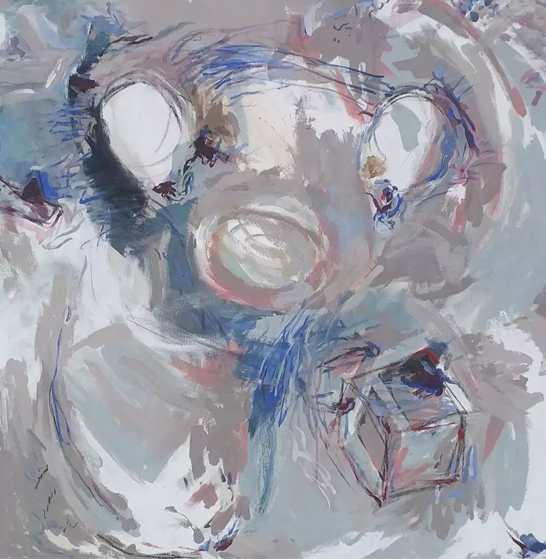
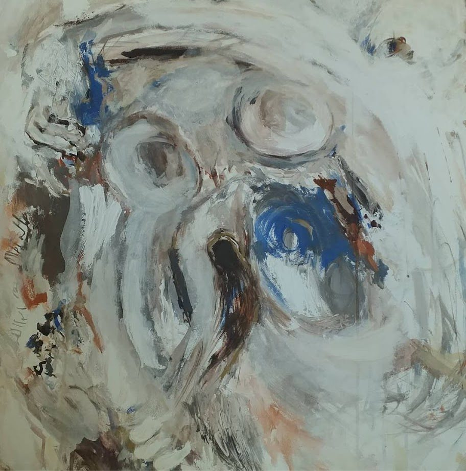
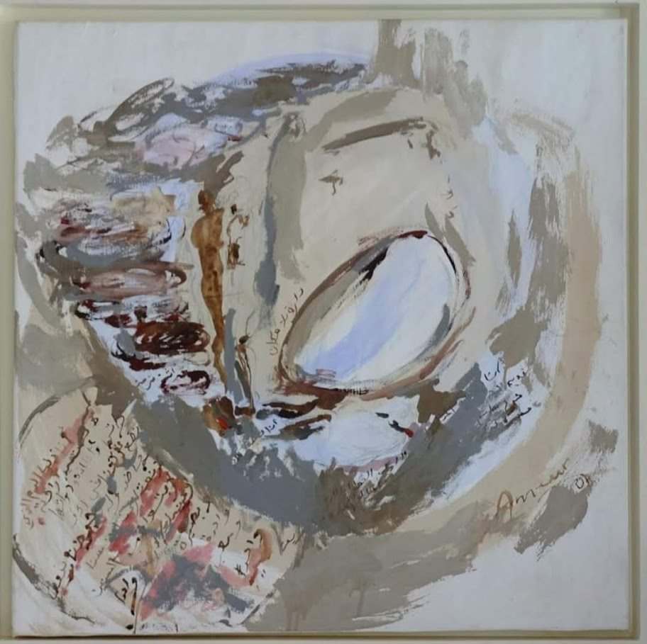

Galería
Obras destacadas
Una selección de proyectos y creaciones artísticas reales de Naoual Ameur Fahid.



Batalla de emociones
Pintura instalada sobre muro.
Líneas rojas
Instalación textil sobre pared.
Secuencia emocional
Composición pictórica en formato panorámico.

Rostros interiores
Pintura expresiva sobre lienzo.

Cartografía sensible
Abstracción en tonos grises y azules.

Cuerpo velado
Exploración gestual y orgánica.

Escritura circular
Pintura con gesto, trazo y memoria.